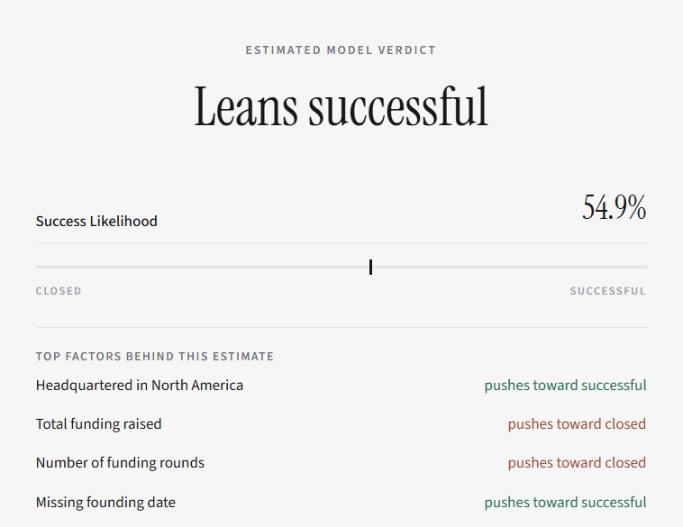
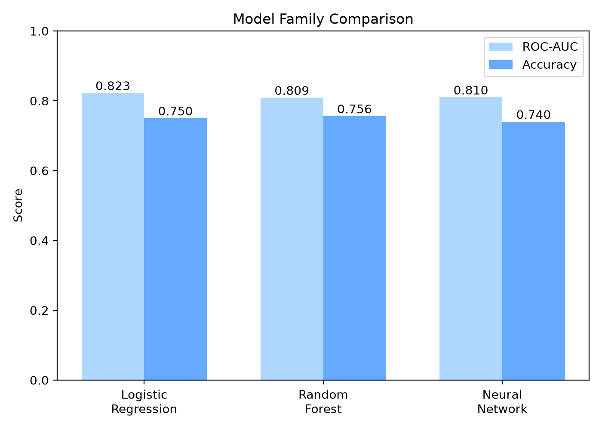
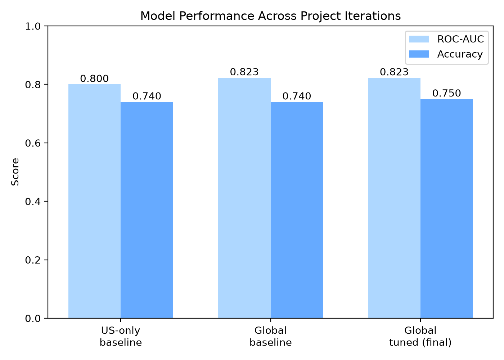
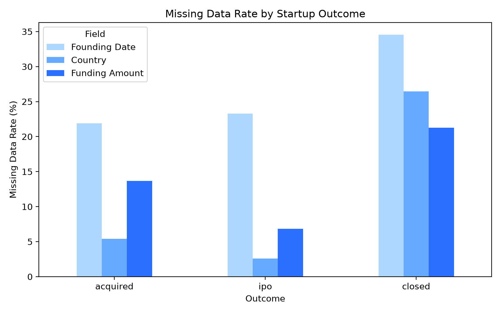

Startup Outcome
Probability Model
Savir Patil, Javin Li, Robin Hu, Edison Wu, Camryn Prunier
Estimates whether an early-stage startup is headed toward acquisition or IPO, versus closure, using only funding history, timing, industry, and location.

Overview
Most startups fail, and the reasons can be difficult to quantify. This project explores whether a simple, interpretable model can predict a startup's likely outcome using only information available in the early stages, while showing which factors are driving that prediction.
Evolution
Discarded a synthetic-data version, then a small 923-company US-only dataset.
Rebuilt on a 13,000+ company global dataset with resolved outcomes.
Optuna-tuned, multicollinearity fixed. This is the deployed model.
An XGBoost valuation estimator for high-confidence, well-funded cases.
The model
Logistic regression is a supervised, binary-classification algorithm. Given a set of inputs, it outputs the probability a company falls into one of two classes: successful (acquired or IPO'd) or closed.
Tested against random forest and neural network models under the same cross-validation setup, logistic regression matched or beat both, with the added benefit of fully interpretable coefficients.

Inputs
- Total funding raised
- Number of funding rounds
- Years to first round
- Years to most recent round
- Headquarters region
- Primary industry category
Output
A success probability, plus the top factors pushing that estimate toward successful or toward closed.
Evaluation
Tuned with Optuna across regularization strength, L1/L2 blend, and class weighting, under 5-fold stratified cross-validation.
Independent runs on slightly different feature sets converged on nearly identical AUC (0.8225 vs. 0.8226) despite landing on different hyperparameters, suggesting the model had reached the ceiling of this feature set.

Bonus: valuation estimator
As a bonus feature, when the first model is highly confident that a company is on track for success, a second model estimates a possible valuation range using the same company profile. This model is trained separately on a dataset of unicorns, or startups that have already reached a billion-dollar valuation. Since it only learns from companies that have already achieved that level of success, it is only used for the predictions the first model is most confident in.
When it activates
- Requires at least 75% success probability from the first model, and at least $10M in total funding.
- Between $10M and $100M in funding: a low-confidence warning is shown, since 96% of training data raised $100M or more.
- Above $100M: the estimate is shown without a warning.
Funding relative to industry average and total funding raised together account for over half of the model's predictive weight; region and sector signals contribute smaller amounts.
Missing data as signal

Rather than dropping incomplete records, we kept them and flagged what's missing. The pattern shows up directly in the final model: missing-data flags carry a negative association with success.
Startups raising funding rounds more frequently were less likely to succeed in our model, possibly reflecting urgent cash needs rather than momentum.
Data sources
Filtered to companies with a resolved outcome (closed, acquired, or IPO'd). Still-operating companies are excluded, since that outcome hasn't happened yet.
Bias & impact
How can the process of creating AI/ML solutions amplify or mitigate bias?
Supports founders and investors with data-driven insight, grounded in real patterns.
Explains which factors influenced each prediction, instead of acting as a black box.
Historical funding data can reinforce existing investment biases if used uncritically.
The original model used almost entirely US data. The global rebuild reduced that imbalance but didn't remove it: North America still makes up roughly two-thirds of the data, so predictions for underrepresented regions, like Africa (about 20 companies), should be treated as low-confidence.
Limitations
- Recency bias. Resolved-outcomes-only skews training data toward older startups.
- Regional imbalance. North America still makes up roughly two-thirds of the data.
- Feature ceiling. Nonlinear and interaction terms gained only +0.001 AUC; more model complexity isn't the next lever.
- Unobserved factors. Team dynamics, timing, and luck aren't captured by funding or location data.
Next steps
Built with
Citations
- Argaw, Y. M., & Liu, Y. (2024). The pathway to startup success: A comprehensive systematic review of critical factors and the future research agenda in developed and emerging markets. Systems, 12(12), 541.
- Founders Forum Group. (2025, May 13). The ultimate startup guide with statistics (2024-2025). Founders Forum.
- Okrah, J., Nepp, A., & Agbozo, E. (2018). Exploring the factors of startup success and growth. The Business & Management Review, 9(3), 229-237.
- Potanin, M., Chertok, A., Zorin, K., & Shtabtsovsky, C. (2023). Startup success prediction and VC portfolio simulation using CrunchBase data. arXiv.
- Razaghzadeh Bidgoli, M., Raeesi Vanani, I., & Goodarzi, M. (2024). Predicting the success of startups using a machine learning approach. Journal of Innovation and Entrepreneurship, 13(1), 80.
- Wang, I. (2019). Predicting a startup's acquisition status (CS229 machine learning technical report). Stanford University.
- Żbikowski, K., & Antosiuk, P. (2021). A machine learning, bias-free approach for predicting business success using Crunchbase data. Information Processing & Management, 58(4), 102555.